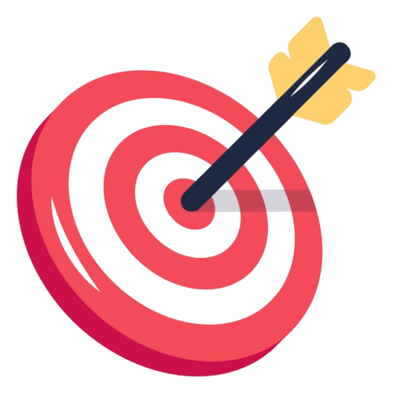

Objetivo
- El objetivo del juego es ganar la suma de todas las apuestas que se realizan durante una mano.
- El acumulado de apuestas se coloca en el centro de la mesa y se le conoce como Bote, Pozo o Pot.